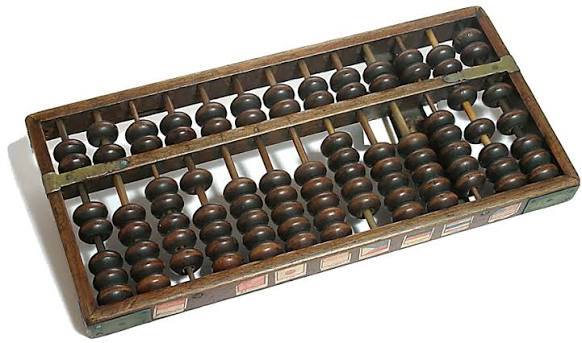
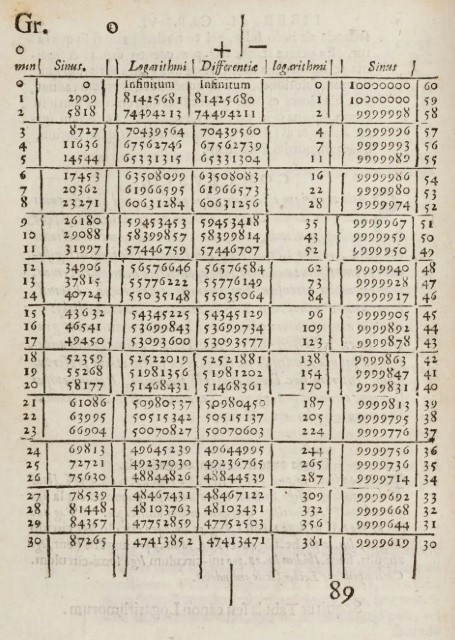
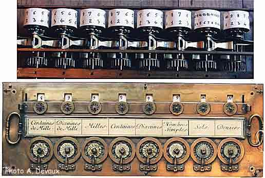
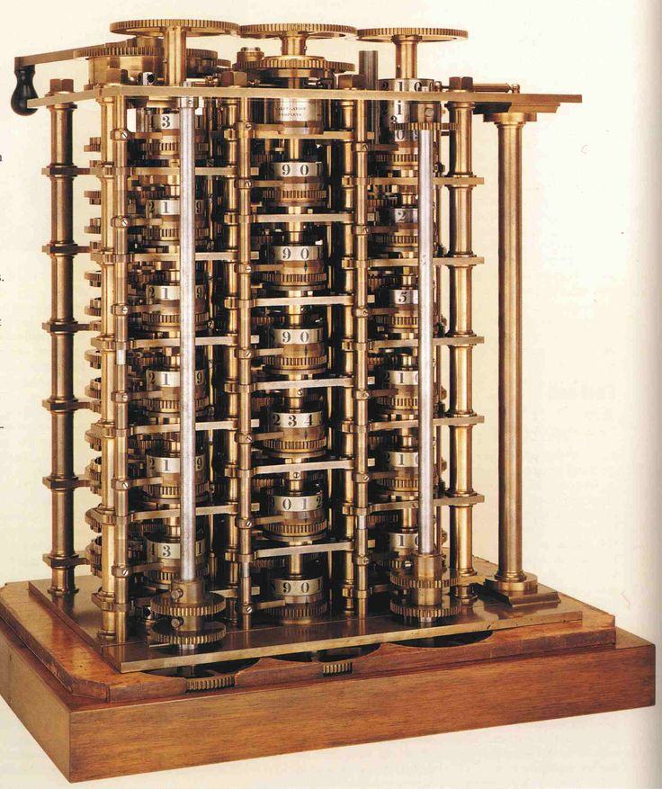
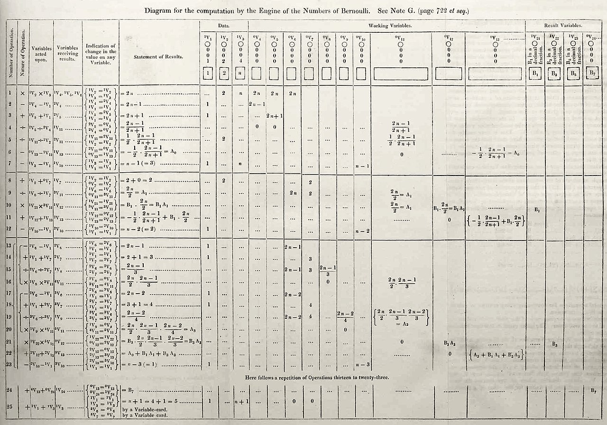
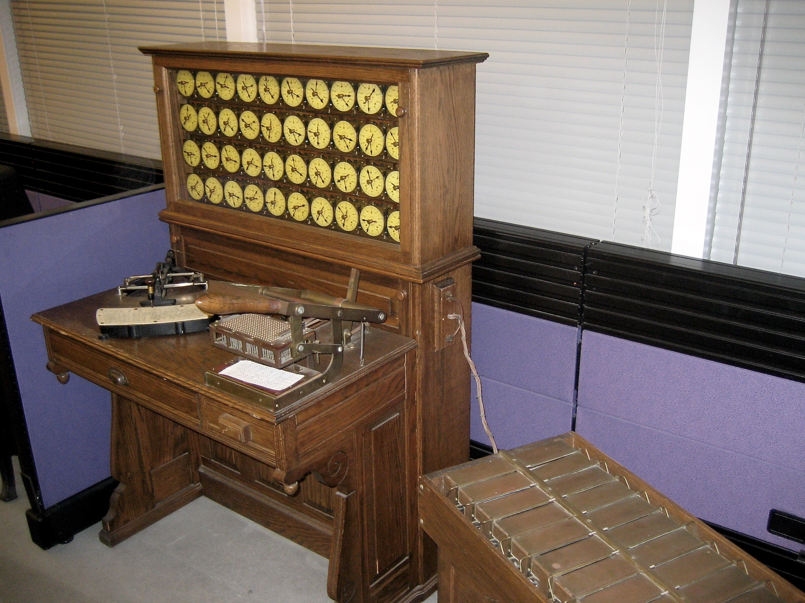

Uno de los instrumentos de cálculo más antiguos. Sus cuentas permitían representar cantidades y realizar operaciones matemáticas.

En 1614, John Napier publicó sus trabajos sobre logaritmos, que facilitaron determinados cálculos matemáticos y posteriormente contribuyeron al desarrollo de instrumentos de cálculo.

En el siglo XVII, Blaise Pascal construyó la Pascalina, una máquina mecánica capaz de realizar operaciones aritméticas mediante ruedas dentadas.

Charles Babbage diseñó primero la Máquina Diferencial y posteriormente la Máquina Analítica. Esta última incorporaba conceptos similares a los de una computadora programable.

Ada Lovelace escribió un algoritmo destinado a ser procesado por la Máquina Analítica de Babbage. Por este trabajo es considerada una de las primeras personas en desarrollar ideas relacionadas con la programación.

Las tarjetas perforadas permitieron representar información mediante perforaciones. Herman Hollerith las utilizó para procesar datos del censo estadounidense de 1890, contribuyendo al desarrollo del procesamiento automatizado de información.
